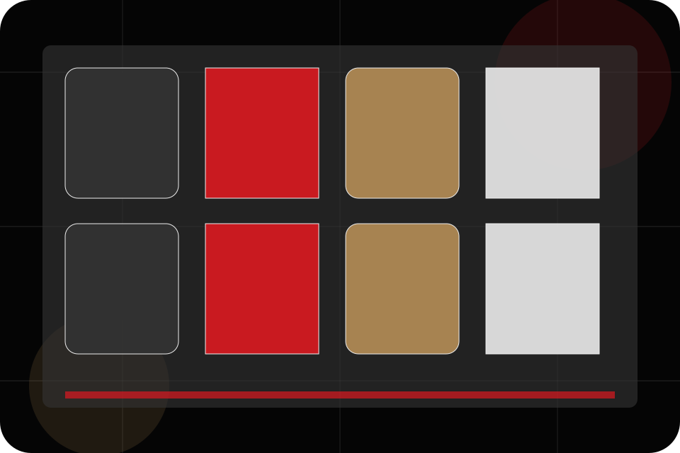
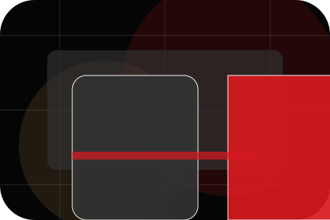
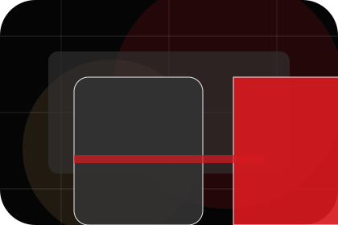
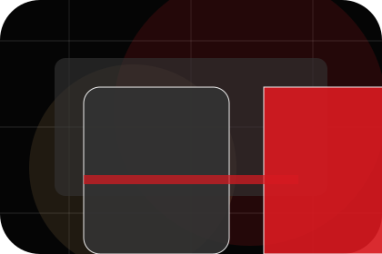
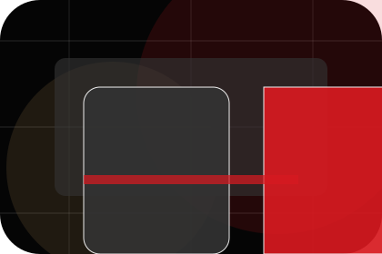
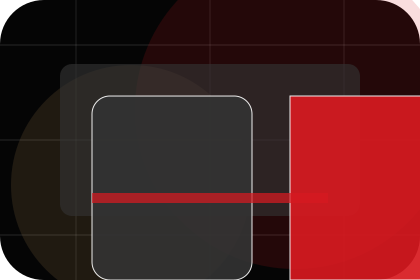
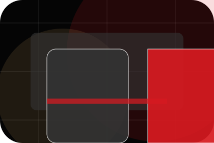
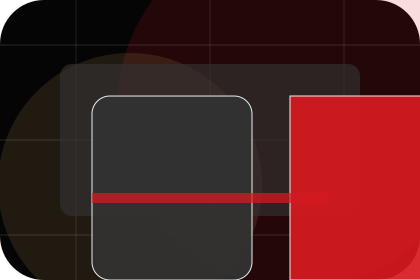
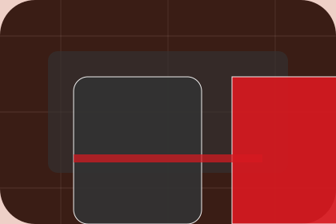

Results / 01
Results by Bright
Results shaped for education, training & learning services decisions.
Results opens as a clear education decision hub: what Bright offers, who it helps, why it matters, and which route to take first.
The first screen combines positioning, proof, primary action, and fast internal navigation, so people can act immediately or compare the rest of the results route with context.
Clear intakeHuman follow-upPractical reassurance
Black cinematic course hero
Filter the options
Select the closest route and Bright keeps the next step, proof, and follow-up expectation aligned with confidence and progress.

Results / 02
Outcomes
Outcomes shows what changes after the work: clearer decisions, visible progress, and proof points that connect the offer to real outcomes.
The layout connects before-and-after thinking with measured outcomes, making the result easy to scan without promising what the business cannot guarantee.
Explore Results
Before
The uncertainty, delay, or missed opportunity visitors bring into outcomes.

After
The clearer, safer, or more valuable state Bright is designed to support.

Proof
The visible cue that connects outcomes to a believable decision, not a loose claim.
Results / 03
Scores
Scores shows what changes after the work: clearer decisions, visible progress, and proof points that connect the offer to real outcomes.
The layout connects before-and-after thinking with measured outcomes, making the result easy to scan without promising what the business cannot guarantee.
Explore ResultsBright structures scores around before, after, and a clear next route so visitors can compare the block quickly before they book a trial.
Book TrialResults / 04
Confidence
Confidence shows what changes after the work: clearer decisions, visible progress, and proof points that connect the offer to real outcomes.
The layout connects before-and-after thinking with measured outcomes, making the result easy to scan without promising what the business cannot guarantee.
Explore ResultsBefore
The uncertainty, delay, or missed opportunity visitors bring into confidence.

After
The clearer, safer, or more valuable state Bright is designed to support.

Proof
The visible cue that connects confidence to a believable decision, not a loose claim.
Results / 05
Testimonials
Testimonials shows what changes after the work: clearer decisions, visible progress, and proof points that connect the offer to real outcomes.
The layout connects before-and-after thinking with measured outcomes, making the result easy to scan without promising what the business cannot guarantee.
Explore ResultsBefore
The uncertainty, delay, or missed opportunity visitors bring into testimonials.
Results / 07
Progress
Progress shows what changes after the work: clearer decisions, visible progress, and proof points that connect the offer to real outcomes.
The layout connects before-and-after thinking with measured outcomes, making the result easy to scan without promising what the business cannot guarantee.
Explore Results- 01
Before
The uncertainty, delay, or missed opportunity visitors bring into progress.
- 02
After
The clearer, safer, or more valuable state Bright is designed to support.
- 03
Proof
The visible cue that connects progress to a believable decision, not a loose claim.
Results / 08
Proof
Proof shows what changes after the work: clearer decisions, visible progress, and proof points that connect the offer to real outcomes.
The layout connects before-and-after thinking with measured outcomes, making the result easy to scan without promising what the business cannot guarantee.
Explore ResultsThe uncertainty, delay, or missed opportunity visitors bring into proof.
The clearer, safer, or more valuable state Bright is designed to support.
The visible cue that connects proof to a believable decision, not a loose claim.
Results / 09
Expectations
Expectations shows what changes after the work: clearer decisions, visible progress, and proof points that connect the offer to real outcomes.
The layout connects before-and-after thinking with measured outcomes, making the result easy to scan without promising what the business cannot guarantee.
Explore Results

Before
The uncertainty, delay, or missed opportunity visitors bring into expectations.
Results / 10
Book Trial
Bright closes the results route with a clear action, a quick reminder of the value, and a low-friction way to book a trial.
Visitors who are ready can use the primary action. Visitors who are still comparing can scan the section links, proof, and support routes before they book a trial.
Book TrialThe final block keeps the choice simple: act now, compare one more proof route, or send enough detail for a focused response.
Book Trialconfidence and progress
Book Trial
A course-led education site with cinematic hero, lesson shelves, premium teacher proof, and trial routes. Results ends with a direct path to book a trial, plus enough context for visitors who still need to compare.

Book TrialNotes
Information is provided for planning and should be reviewed for the final client, location, and operating rules.